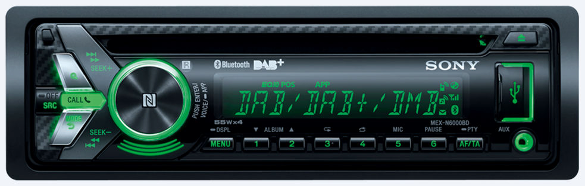

Antes de empezar
Para realizar estos ejercicios, deberás descargar los recursos del enlace de proyecto_poo_roles_abstracción. Como puedes ver, la solución está compuesta de varios proyectos. Cada uno de ellos corresponde con un ejercicio, deberás implementar todo el código, tanto de la Main como de los métodos que se piden en cada ejercicio. Cada proyecto contiene el test correspondiente, que deberás pasar para comprobar que has hecho el ejercicio correctamente.
Implementa una jerarquía de clases para gestionar personal de cuidados en un centro. La clase base PersonalCuidados será no instanciable y dos subclases concretas: Enfermero y CuidadorResidencia.
Ejercicio 1: Gestión de personal de cuidados
Creando personal...
Mostrando información:
Personal: Ana Ruiz - Rol: Enfermero
Turno: Noche
Pacientes asignados: 12
Descripción: Supervisa y administra medicación a los pacientes.
- Tareas asignadas:
[08:00] Enfermero: Entrega de turno y repaso de incidencias.
[23:00] Enfermero: Realiza ronda de control y prepara medicación nocturna.
[03:00] Enfermero: Atiende emergencias y revisa signos vitales de pacientes críticos.
[19:00] Enfermero: Prepara informes de pacientes y coordina con el equipo médico.;
Personal: Luis Pérez - Rol: CuidadorResidencia
Turno: Mañana
Habitaciones asignadas: 3
Descripción: Ayuda en las actividades diarias y acompaña a los residentes.
- Tareas asignadas:
[07:00] Cuidador: Ayuda en el aseo matutino.
[15:00] Cuidador: Revisión de habitaciones y apoyo a residentes con necesidades especiales.
[12:00] Cuidador: Asiste en la hora de la comida y supervisa la ingesta alimentaria.;
- Gestión de turno a las 23:00:
[23:00] Enfermero: Realiza ronda de control y prepara medicación nocturna.
[15:00] Cuidador: Revisión de habitaciones y apoyo a residentes con necesidades especiales.
- Gestión de turno a las 15:00:
[08:00] Enfermero: Entrega de turno y repaso de incidencias.
[15:00] Cuidador: Revisión de habitaciones y apoyo a residentes con necesidades especiales.
Presiona cualquier tecla para salir...
Error: plantuml.jar file not found: "" Please download plantuml.jar from https://plantuml.com/download. If you are using VSCode or coc.nvim, then please set the setting "markdown-preview-enhanced.plantumlJarPath" to the absolute path of plantuml.jar file. If you don't want to use plantuml.jar, then you can use the online plantuml server by setting the setting "markdown-preview-enhanced.plantumlServer" to the URL of the online plantuml server, for example: https://kroki.io/plantuml/svg/
Requisitos
Algunos de los elementos más específicos que se tienen que implementar son:
PersonalCuidados:
TareasTurno (lista de TareaTurno) que almacena las tareas asignadas a cada tipo de personal según la hora.`AñadeTareaTurno que en las concreciones incluirá a la descripción la información con el tipo de personal que realiza la tarea.GestionaTurno(horaActual: DateTime): string que busca en la lista TareasTurno la tarea correspondiente a la hora indicada y devuelve una cadena con la hora y la descripción de la tarea. Si no hay tarea exacta, devuelve la tarea más próxima anterior o un mensaje por defecto.ToString que devuelve la información común y la descripción del rolImplementa una jerarquía de clases para gestionar una agenda de horarios usando un union type para el rango temporal del evento.
Ejercicio 2: Gestión de agenda de horarios
Creando eventos...
Evento: CitaMedica
- Evento -> Desde: 2025-09-10 09:30, Hasta: 2025-09-10 10:00 - Cita Médica: Consulta Cardiología - Horario específico
Dirección: Av. de la Salud, 15
- Evento -> Desde: 2025-09-10 00:00, Hasta: 2025-09-10 23:59 - Reunión: Reunión de proyecto - Todo el día
Asistentes: Ana, Juan, Marta
- Evento -> Desde: 2025-09-01 00:00, Hasta: 2025-10-01 00:00 - Cita Médica: Consulta Revisión mensual - Todo el mes
Dirección: C/ Mayor, 22
Presiona cualquier tecla para salir...
Requisitos:
El union type debe implementarse como un record abstracto RangoEvento con variantes:
TodoElDia vacia.HorarioEspecifico (con inicio y fin) ambos de tipo DateTimeTodoElMes (con nombre del mes, string)La clase base abstracta EventoAgenda debe tener:
Propiedad Descripcion (string, solo lectura)
Propiedad FechaInicio (DateTime, solo lectura)
Propiedad FechaFin (DateTime, solo lectura)
Constructor que recibe la descripción y un parámetro de tipo union type RangoEvento. El constructor debe asignar FechaInicio , FechaFin y una aclaración a la Descripcion con información según el tipo de rango recibido (usando switch de expresión, tuplas y las funciones del DateTime para formatear las entradas).
Para calcular la fecha de inicio y fin de todo el día puedes usar las propiedades:
// Obtiene las 00:00:00 horas del día actual
DateTime inicioDia = DateTime.Today;
// Obtiene las 23:59:00 horas del día actual
DateTime finDia = DateTime.Today.AddDays(1).AddMinutes(-1);
Para calcular el inicio y fin del mes actual puedes usar:
// Obtiene las 00:00:00 horas del día 1 del mes actual.
DateTime inicioMes = new DateTime(DateTime.Today.Year, DateTime.Today.Month, 1);
// Obtiene las 00:00:00 horas del día 1 del mes siguiente.
DateTime finMes = inicioMes.AddMonths(1);
Método abstracto DescripcionEvento()
Sobrescribe ToString() para mostrar: descripción, fecha de inicio y fecha de fin.
Debes crear al menos dos concreciones:
CitaMedica (hereda de EventoAgenda):
direccion (string)DescripcionEvento() que devolverá el texto: "Cita Médica".ToString() para añadir información relevante de la cita, incluyendo la dirección.ReunionTrabajo (hereda de EventoAgenda):
asistentes (List<string>)DescripcionEvento() que devolverá el texto: "Reunión".ToString() para añadir información relevante de la reunión, incluyendo los asistentes.En la clase Program, implementa un método GestionaEventos que permita crear eventos de diferentes tipos (CitaMedica y ReunionTrabajo) usando las tres variantes de RangoEvento (HorarioEspecifico, TodoElDia, TodoElMes).
En este ejercicio trabajarás con el patrón de validación usando records y clases abstractas. Utiliza como base el ejemplo del tema:
public abstract record Validacion
{
public record Exito() : Validacion;
public record Error(string Mensaje) : Validacion;
}
public static class Validador
{
public static Validacion ValidaDni(string dni) =>
!String.IsNullOrWhiteSpace(dni) && dni.Length == 9
? new Validacion.Exito()
: new Validacion.Error("El DNI debe tener 9 caracteres.");
public static Validacion ValidaNombre(string nombre) =>
!String.IsNullOrWhiteSpace(nombre)
? new Validacion.Exito()
: new Validacion.Error("El nombre no puede estar vacío.");
public static Validacion ValidaFechaNacimiento(DateTime fecha) =>
fecha < DateTime.Today.AddYears(-10)
? new Validacion.Exito()
: new Validacion.Error("La fecha de nacimiento no es válida.");
}
Ejercicio 3: Validación de formularios
Para las entradas de datos...
Estudiante: DNI=12345678A, Nombre=Ana Ruiz, FechaNacimiento=10/05/2005, Estudios=Informática
Validación: INCORRECTO -> Los estudios no están definidos
Estudiante: DNI=, Nombre=Pedro, FechaNacimiento=10/05/2005, Estudios=DAM
Validación: INCORRECTO -> El DNI debe tener 9 caracteres.
Profesor: DNI=87654321B, Nombre=Luis Pérez, FechaNacimiento=20/11/1980, Especialidad=Matemáticas, Departamento=FISC
Validación: CORRECTO -> El profesor Luís Pérez con DNI: 87654321B y de la especialidad de matemáticas 'ha sido añadido al sistema'.
Presiona cualquier tecla para salir...
Requisitos:
Implementa una clase abstracta Formulario con las propiedades básicas:
Dni (string)Nombre (string)FechaNacimiento (DateTime)Validacion que devuelva un objeto Validacion y valide todas las propiedades usando la clase Validador.Crea dos subclases:
Estudiante con la propiedad adicional: Estudios (string) y que valide también que los estudios pertenezcan al enumerado de la clase Estudiante Estudios [SMR, ASIR, DAM, DAW].
Profesor con las propiedades adicionales: Especialidad (string), Departamento (string) valida que ambas propiedades no estén vacías y que el departamento esté formado por cuatro letras mayúsculas (ejemplo: INFO, MATE, INGL).
Para todas las clases, anula el ToString para que se muestre una representación del objeto
Modifica la clase de utilidad Validador añadiendo los métodos necesarios.
En el programa principal, crea un método GestionaFormularios para crear una lista de formularios con objetos de ambos tipos, muestra la información y el resultado de la validación de cada uno.
En este ejercicio crearás una interfaz propia junto con la implementación de IComparable para modelar sesiones de entrenamiento de distintos deportes.
Ejercicio 4: Interfaces y entrenamiento Creando sesiones... Mostrando Sesiones realizadas... Sentadillas (Basica) - Duración: 20 min Intensidad: 6 Calorías estimadas: 157,00 kcal Fecha: 2025-09-10 Sentadillas (Peso) - Duración: 25 min Intensidad: 8 Calorías estimadas: 267,00 kcal Fecha: 2025-09-10 Running - Duración: 45 min Intensidad: 4 - Distancia: 7,5 km Calorías estimadas: 291,00 kcal Fecha: 2025-09-11 Comparaciones: Sentadillas (Peso) vs Sentadillas (Basica): > (mayor gasto calórico) Presiona cualquier tecla para continuar...
Requisitos:
Interfaz a definir IEntrenamientoDeportivo
Deporte (string)DuracionMinutos (int)Intensidad (int)CaloriasEstimadas (double). Donde la formula para el calculo puede ser DuracionMinutos * Intensidad * factor, donde factor será un elemento que dependerá del deporte (por ejemplo: Running=1.2, Ciclismo=1.0, Natacion=1.5, Sentadillas=1.3, Otro=0.9).IniciaSesion(): void método que será llamado cuando se inicie la sesiónTerminaSesion(): void método que será llamado cuando se acabe la sesión y aprovechará para calcular la duración en minutos.Clase Sentadillas que implementa IEntrenamientoDeportivo e IComparable. Con los siguientes elementos propios:
TipoSentadillas con los valores [Basica=1, Bulgara=2, Salto=4, Peso=7]Fecha (DateTime)Tipo (TipoSentadillas)inicioSesion (DateTime), para guardar el momento de inicio sesiónCaloriasEstimadas se le sumará el valor asociado a tipo de sentadillas.IComparable entre dos tipos de sentadillas distintos, usando las calorias gastadas como referencia.Clase Running que implementa IEntrenamientoDeportivo con los siguientes elementos propios:
DistanciaKm (double)CaloriasEstimadas será la fórmula base + (DistanciaKm * 10).Vamos a diseñar las clases para un posible sistema operativo de una antigua radio de coche con DAB (Digital Audio Broadcasting) y un reproductor de CD.

En el programa principal copiaremos el siguiente código a completar, que nos permitirá deducir funcionalidades:
public static void Main() {
string[] canciones = {
"Wanna Be Startin' Somethin", "Baby Be Mine", "The Girl Is Mine", "Thriller", "Beat It",
"Billie Jean", "Human Nature", "P.Y.T. (Pretty Young Thing)", "The Lady in My Life"};
Disc thriller = new Disc("Thriller", "Michael Jackson", canciones);
DABRadioCD radioCD = new DABRadioCD();
ConsoleKeyInfo tecla = new ConsoleKeyInf();
do {
try {
Console.WriteLine(radioCD.MessageToDisplay);
tecla = Console.ReadKey(true);
Console.Clear();
switch (tecla.KeyChar) {
...
case '7':
radioCD.InsertCD = thriller;
break;
...
}
}
catch (Exception e) {
Console.WriteLine(e.Message);
}
} while (tecla.Key != ConsoleKey.Escape);
Además de implementar el diagrama de clases siguiente:
Error: plantuml.jar file not found: "" Please download plantuml.jar from https://plantuml.com/download. If you are using VSCode or coc.nvim, then please set the setting "markdown-preview-enhanced.plantumlJarPath" to the absolute path of plantuml.jar file. If you don't want to use plantuml.jar, then you can use the online plantuml server by setting the setting "markdown-preview-enhanced.plantumlServer" to the URL of the online plantuml server, for example: https://kroki.io/plantuml/svg/
MODO: CD STATE: PLAYING... Album: Thriller Artist: Michael Jackson. Track 3 - The Girl Is Mine [1]Play [2]Pause [3]Stop [4]Prev [5]Next [6]Switch [7]Insert CD [8]Extract CD, [ESC]Turn off
Requisitos:
Que completaremos con las siguientes funcionalidades.
Tendremos una clase DABRadioCD que estará compuesta por dos dispositivos un reproductor de CD y un sintonizador DAB.
En el reproductor de CD además podremos tener un Compat Disc® representado por la clase Disc.
Disc tendrá un método NombreCancion que permitirá acceder al título de cada canción y una sobreescritura de ToString que permitirá ver el nombre del álbum y el artista de la canción.📌 Nota: Recuerda que en C# los Get (Accesores), Set (Mutadores) son Propiedades y que los campos se pueden implementar a través de Propiedades Autoimplementadas.
El reproductor de CD implementa la interfaz IMedia con la funcionalidad:
MessageToDisplay: Propiedad que devuelve un mensaje para el Display del DABRadioCD con el estado del reproductor. Devolviendo NO DISC si no hay un disco en su interior. Además, en este caso el resto de opciones de reproducción deberían devolver el mismo mensaje, no teniendo efecto.
Play: Que reproducirá el disco desde la pista 1, si el reproductor está parado o desde la pista correspondiente si está pausado. Devolviendo en MessageToDisplay el estado, la información del CD y la pista que está sonando ...
PLAYING... Album: Thriller Artist: Michael Jackson Track 1 - Wanna Be Startin' Somethin
Stop: Parará la reproducción. Devolviendo MessageToDisplay...
STOPPED... Album: Thriller Artist: Michael Jackson
Pause: Pausará la reproducción si está sonando y la reanudará si está pausada. Si pasa a pausado, MessageToDisplay devolverá…
PAUSED... Album: Thriller Artist: Michael Jackson. Track 1 - Wanna Be Startin' Somethin
Next/Previous: Si esta sonando, buscará la anterior o siguiente pista a reproducir de forma cíclica. Esto es, si llega al final irá al principio y viceversa. Además, si está pausado empezará a reproducir la nueva pista.
El sintonizador de DAB implementa el interfaz IMedia con la funcionalidad, empezará parada.
MessageToDisplay: Propiedad que devuelve un mensaje para el Display del DABRadioCD con el estado de la radio.
Play: Que sintonizará la primera frecuencia de la banda de FM (MIN_FREQUENCY) si estaba apagada (OFF) o continuará con el streaming almacenado en el buffer si estaba pausada. Devolviendo MessageToDisplay…
HEARING... FM – 87,5 MHz
Stop: Parará el streamig. Devolviendo MessageToDisplay… RADIO OFF
Pause: Pausará la reproducción si está sonando la radio y la reanudará si está pausada. Si pasa a pausado se almacenará todo el streaming en un buffer para poder reanudar la emisión donde se quedó y MessageToDisplay devolverá…
PAUSED - BUFFERING... FM – 87,5 MHz
Next/Previous: Si esta sonando moverá el dial a la anterior o siguiente frecuencia, con saltos de 0,5 MHz cada vez que se pulse. Si llega al final de la banda (MAX_FREQUENCY) irá al principio de la misma y viceversa. Además, si está pausada empezará a reproducir desde la nueva frecuencia.
Nuestro DABRadioCD implementa el interfaz IMedia con la funcionalidad:
Para los métodos de IMedia, llamará a los respectivos del dispositivo activo en ese momento.
MessageToDisplay: Devolverá una cadena con el dispositivo activo, el estado devuelto por el correspondiente método del dispositivo activo y el menú de opciones para manejar nuestro DABRadioCD.
MODO: CD STATE: PLAYING... Album: Thriller Artist: Michael Jackson. Track 1 - Wanna Be Startin' Somethin [1]Play [2]Pause [3]Stop [4]Prev [5]Next [6]Switch [7]Insert CD [8]Extract CD, [ESC]Turn off
Insertar un CD: Devolverá una excepción si ya hay un CD dentro del reproductor. Si no lo hay, pasaremos a modo CD y empezará la reproducción automáticamente.
Extraer un CD: Retirará el CD del reproductor y pasará a modo DAB.
Intercambiar modo: Pasará de CD a DAB o viceversa. Teniendo en cuenta que si pasamos a CD este empezará a reproducir donde se quedó.